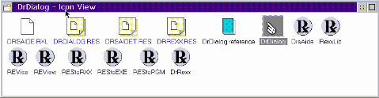
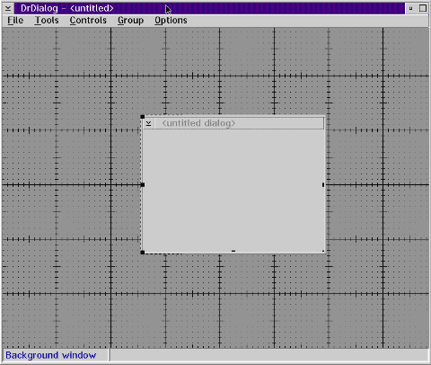
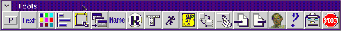
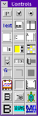
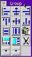
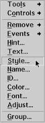
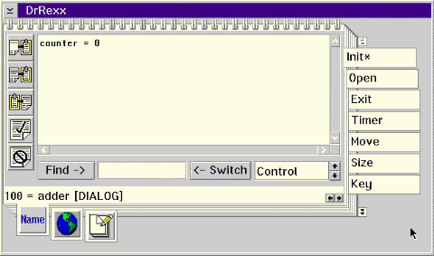
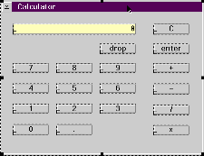

Dr. DialogWritten by Paul Floyd |
What Is DrDialog?[NOTE: Here is a link to a zip of the source code for this article. Ed] DrDialog is a Rexx GUI builder, based on dialog boxes. It was written by a single IBMer, David Morrill. It is kind-of free, being shipped on the IBM Developer Connection. For more information on DevCon see http://www.developer.ibm.com/devcon, or e-mail devcon@vnet.ibm.com. InstallationWhen I installed DrDialog, it only created shadows of the files on the CD-ROM, which I found not particularly convenient, so I created a directory myself, copied the files, and changed all the shadow settings to point to the files on my hard disk. You have to have Rexx installed as well.  When you run DrDialog, you get a fairly conventional GUI builder. I'll assume the reader is familiar with tools such as the OS/2 Dialog Editor. DrDialog allows you to perform all the layout of PM controls that you'd expect.  The Menu BarNote that mouse button 2 brings up a pup-up context menu that allows you to access all of these functions and a couple more as well. File gives you save and open items. Save as... has a few more options than you might expect. Unfortunately, appearances are a bit deceptive. The WinProc option does nothing. And the Oberon option does cause code to be generated, but only for an unreleased IBM internal Oberon-2 compiler by the same author. Since you can save as resource files, this allows you to use DrDialog as a souped up dialog editor, though you may prefer to use URE for that. The tools menu items makes a menu of icons drop down. Some of these lead to actions, some to dialog boxes, and some to tool bars (including a tool bar for the tool menu item itself).  The buttons perform the following actions, from left to right:
 Group gives the standard controls for tidying the appearance of a dialog box. Like similar tools, it works by selecting a number of items. Then the buttons cause actions like align left, centre, make same width/height, distribute evenly horizontally/vertically, delete object, hide or unhide.  Options gives a dialog box with two parts. One is the option to save the project before running it. The other is whether to copy any Rexx code associated with a control when the control is itself is copied within DrDialog. Pop-up menuThis also provides access to the functions mentioned above. This can make access to the Rexx code a lot quicker. It is also the means to alter the name, ID and text (button text, dialog title, entry field initial text etc.) and hint text (note, I haven't been able to get this to work). The pop-up toolbars (e.g. for colour) are miniature versions of the ones accessed through the main drop-down menu.  Principles of useFirstly, you create your dialog box GUI. Add the controls, either from the Controls menu item or the controls toolbar. Then alter the layout, and set text strings. Add the Rexx code you wish. This is best done by clicking mouse button 2 on the control desired, and then on the Events-> menu item. A context-sensitive pop-up menu will then allow you to edit the Rexx code relevant to actions pertinent to that control (Clicked... for a button, PageUp..., for instance, for a scroll bar). Note for global variables, if you want to set them at startup, use the init... settings of the DrDialog dialog box for the dialog box itself. As a very simple example, suppose that you create a dialog called "MyDialog", in which you put a static text called "MyText". The Text displayed by "MyText" is "not clicked". The name of the button does not matter. We want to change the static text to "clicked". Click mouse button 2 on the button, and select Events->Click... Rexx code that we could use to achieve this is CALL MyDialog.MyText.Text "clicked" Once you have performed all these tasks, and debugged your application (quite fast within DrDialog), you can create a standalone .exe file by dragging the .res file you have been working on to the REStoEXE icon in the DrDialog folder. An exe will be created in the directory where DrDialog is installed, and an object will be created on your desktop. A Longer ExampleFor this example, I'll use a simple Reverse Polish Notation four function calculator. Why RPN? Well, I'm an keen HP48 GX user for a start, and RPN is much easier to program than parentheses based arithmetic expression calculators. The pieces of junk that would express 1 + 2 * 3 as 9 I don't deem worthy the name of a calculator. Brief digression into design and modalityThe difficulty with working in conventional arithmetic is that the functions become modal. This means that you don't know whether to evaluate a "+" until after the operation after the second operand is entered after the "+". If the second operation is "+", "-" or "=", then the first "+" can be evaluated. If, however, the second value is followed by "*" or "/", then the first operation is suspended pending the outcome of the (higher precedence) "*" or "/". Back to the exampleRexx itself is quite well suited to the task. It has built in (string based) arithmetic, with precision programmatically controllable. It also has a built in stack, just what we need for storing the operands for RPN evaluation. We'll use a single global variable "counter" to represent the number that is being displayed on the calculator "screen". To add that, select the dialog box itself and click mouse button two on it to bring up the pop-up menu, then select Events->Init... and add the code to the notebook dialog, as below.  The dialog box itself has a name (and text) "Calculator". For the display, add an entry field. Give it a name, "display", and style right-align and read-only (leave the other styles as they are). For the digit keys, we'll use push buttons. Add 10 of them. Change the button text to the figure it is supposed to enter, then add Rexx code to update "counter" and also to update the display from the Events->click... pop-up context menu. Here is an example for the digit 1:
if counter = 0
then
/* this prevents a (meaningless) preceding zero */
counter = 1
else
/* catenate a 1 on the end of counter */
counter = counter'1'
/* display counter */
CALL Calculator.display.Text(counter)
Note that only if the display is showing '0' does the digit replace the
display. Otherwise, it is simply catenated to the right of the display (as
a string). This works irrespective of whether a decimal point has been
entered or not. If we were using a floating point number as the type of
"counter" then the code would be much trickier.
Adding these digit buttons can be achieved fairly quickly by creating one, and then copying it 8 times, with the "Copy REXX code" option. All you have to do is change the button text, and the digit that the different keys catenate on the end of "counter". The code for '0' itself is a bit different.
if counter != 0
then
do
/* catenate a zero at the end of counter */
counter = counter'0'
/* update the display */
CALL Calculator.display.Text(counter)
end
Though "if counter = 0 then counter = 0 ... " would have worked here as
well.
For the decimal point, we have to check if one has already been entered. If one has, and a second one is entered, then don't update the display or counter, but beep.
/* rv (return value) */
/* POS returns zero if substring is not found in string */
rv = POS('.',counter)
if rv = 0
then
do
/* only add decimal point if one isn't already there */
counter = counter'.'
/* update the display */
CALL adder.display.Text(counter)
end
The four function keys (+, -, * and /) all act upon the contents of
"counter" and the bottom item (most recently pushed) on the stack.
Here is the code for "+":
/* check there is at least one item on the stack */
if QUEUED() >= 1
then
do
/* pop one item off stack into temp, local variable */
PULL temp
/* calculate new value of counter */
counter = counter + temp
/* display counter */
CALL Calculator.display.Text(counter)
end
If you do not do the check for there being items on the stack, the
application will pop up a dialog box requesting the missing operand.
The code for "/" is a bit different. We can't allow divide by zero. Here is the code:
/* first check if attempting to divide by zero */
if counter = 0
then
do
/* beep and message box if so */
CALL BEEP 600, 200
CALL RXMESSAGEBOX "Divide by zero error", "Error", "OK", "ERROR"
end
else
do
/* OK, non zero divisor, carry on as usual */
if QUEUED() >= 1
then
do
PULL temp
counter = temp / counter
CALL Calculator.display.Text(counter)
end
end
Don't forget, all these code snippets (except the init code) are attached
to the push button Events->click... popup menu item.
There are 3 more keys to add. Clear, to wipe the current contents of "counter" (set to zero). Drop, to drop the bottom most item on the stack to "counter" (contents of "counter are lost) and Enter, to add "counter" to the stack, and reset "counter" to zero.
Drop:
/* check if there are any items on the stack */
if QUEUED() >= 1
then
do
/* yes there are items */
/* pop off stack into counter */
PULL counter
/* refresh display */
CALL Calculator.display.Text(counter)
end
else
do
/* no items on stack */
/* simply reset counter to zero */
counter = 0
/* redisplay */
CALL Calculator.display.Text(counter)
end
Clear:
/* reset counter and redisplay */
counter = 0
CALL Calculator.display.Text(counter)
Enter:
/* push current display onto stack */
PUSH counter
/* reset the counter to zero */
counter = 0
/* display counter */
CALL Calculator.display.Text(counter)
At the end, you should have a working calculator that looks like this:
 Further ChangesThere are two main things about this quick and simple implementation that could be a a lot better. One is that you can still add digits to a result after performing an operation. This "feature" is not present in real world calculators. My HP has the number left justified when being entered, but right justified after operations. Second, it would be nice to use the keypad instead of only clicking on buttons (which to me seems unnatural). I don't see any way to attach keyboard handlers to the push buttons in DrDialog. The alternative would be to make the display writable. But that opens up a can of worms regarding illegal characters (mainly alphabetical characters). More 'minor' features would be things like unary transcendental functions. Rexx doesn't support these, but there are quite a few 3rd. party libraries that add these abilities. I assume if you load these libraries in the dialog init code, it should all work, but I haven't tested this. Along with this would come exponential notation. I imagine the code for the "+/-" key would be a bit hairy! SummaryI was impressed with the quality and ease of use of this package, especially as it was written by just one guy. On the down side, a few of the features are a bit quirky due to the age of the package. It's probably not supported any more, and it doesn't offer more advanced features like database access. If there's any interest, I'll take a look at the custom DrDialog controls like the canvases. |